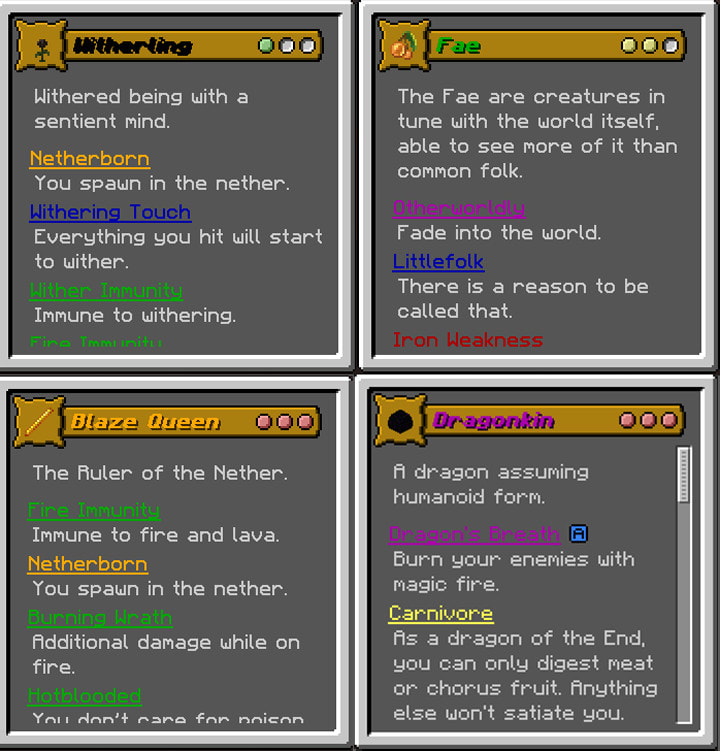
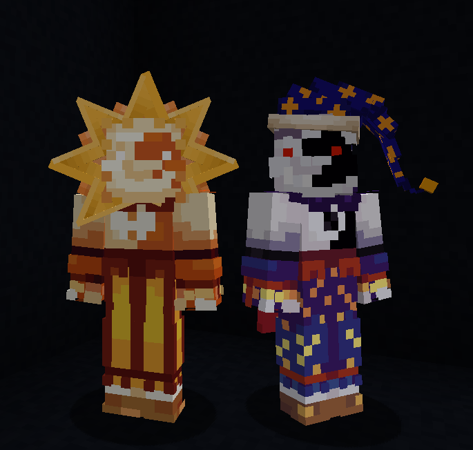
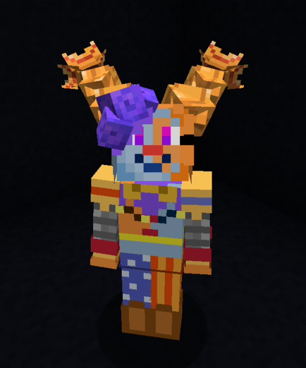

Overview
These are a collection of self-contained packages that build off of a popular Minecraft mod called Origins. The mod provides users with a library of tools that can be used to create custom code in datapacks that change or add to how the mod functions. These datapacks typically contain custom origins, which are sets of "powers" the player gets when starting a new game. The powers can be things like: phasing through walls, being immune to fire, growing or shrinking in size, burning in daylight etc.
The datapacks are compiled through a combination of built-in tools from the mod and all available vanilla Minecraft capabilities, such as functions and commands. All of these were written in JSON datapack files over the course of a year and a half, with new datapacks written nearly daily. The majority of these datapacks were commissioned on Fiverr and later posted on the official Origins Discord server and GitHub for open access after I decided to stop creating them.
What I learned
The process involved talking setting up prices, gauging development time, talking to customers and breaking down their ideas into something I can work with, and, of course, coding them. Creation of an Origins datapack involved multiple tools available for datapacks and resourcepacks in Minecraft, such as running commands, custom textures and models, online generators to save time rewriting the same syntax over and over again, and more.
What I learned:
- Basic code structure and logic
- Basic optimization
- Basic bugtesting and troubleshooting
- Minecraft datapacks & resourcepacks creation via JSON files
- Problem-solving using any available tools, sometimes in creative, unorthodox ways
- Pricing my time and predicting time to complete a datapack
- Communicating with customers about technical terms in a way that they can understand
- 3D model creation in Blockbench
- Adding SFX and visual effects to effectively communicate game mechanics
- Writing descriptive guidelines to using game mechanics
- Creating a personal script library for faster, easier development
- Notepad++
- Visual Studio Code
- GitHub
Media
Power Examples



